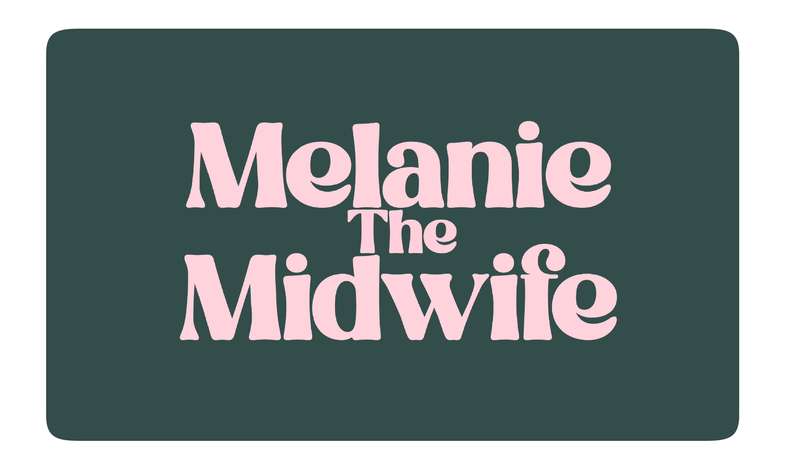

Cover
This Business Bible Belongs to:
Meet your cohort — Page 1
Meet your cohort
Use the notes column to jot down location, phone, Instagram or anything useful!
| Name |
Email |
Notes |
| Elo Ayemite Magbegor | elo.magbegor@hotmail.com | |
| Barbara Pretel | barbarapretel@gmail.com | |
| Chantelle Maree Ragg | chantelle.ragg@yahoo.com | |
| Kate Bartlett | kateb.85@hotmail.com | |
| Krystal Dicketts | sacredsixbirtheducation@gmail.com | |
| Mikaela | midwifemikaela185@gmail.com | |
| Christie Taylor | christie.taylor@gmail.com | |
| Melanie Archbold | melaniearchbold72@gmail.com | |
| Jessica Clark | jessica.c.clark86@gmail.com | |
| Roslyn Callaghan | roslyncallaghan@me.com | |
Meet your cohort — Page 2
Meet your cohort
Use the notes column to jot down location, phone, Instagram or anything useful!
| Name |
Email |
Notes |
| Chantelle Woodhouse | chantelle.woodhouse@hotmail.com | |
| Isabel Silvis | belsilvis@gmail.com | |
| Kate Hoeben | katehoeben@hotmail.com | |
| Meg Hitchick | meg.hitchick@gmail.com | |
| Alexa Nguyen | alexanguyen321@gmail.com | |
| Caroline Hurnen | rbfcaro95@gmail.com | |
| Olivia Gross | liv.0645@gmail.com | |
| Grace Newton | grace_newton2@hotmail.com | |
| Melanie Jackson | mel@melaniethemidwife.com | |
Module 1 Notes — 1
Module 1 Notes — 2
Meet your mentor
Hi! I'm Dr Melanie Jackson, your new mentor
I have been a registered nurse since 2007 and a registered midwife since 2008, having completed a Masters in Nursing and a postgraduate degree in Midwifery. After completing midwifery at the top of my class, I was invited to complete a PhD at Western Sydney University under the supervision of Prof. Hannah Dahlen and Prof. Virginia Schmied.
I completed my thesis 'Birthing outside the system: wanting the best and safest' in 2014 — all while having my first baby in 2013, juggling private practice, a PhD, and building a house!
"I am no stranger to hard work or business. I started my first business at 18 as a massage therapist — and I have been building ever since."
I am the CEO of 'Melanie the Midwife' — a business enterprise including my clinical work, the Great Birth Rebellion podcast, the Assembly of Rebellious Midwives, online education programs, and this mentorship. This mentorship will help you launch yourself into private practice just as I did, drawing on 22 years of business experience.
Introducing the mentorship
Introducing the Mentorship
Welcome to the 2026 'Launch yourself into private practice mentorship'. Running since 2021, over 180 midwives have joined with 50 continuing into the maintenance program.
What's included
- Live 4-day workshop — Wednesday May 6th to Saturday May 9th, in person or via live stream. Recorded and available on your platform indefinitely.
- Online mentorship platform at melaniethemidwife.com — recordings, downloads, Record of Understanding templates, and active comment sections.
- 7 monthly live mentorship sessions, June through December — 2 hours each, recorded.
- Email access to Mel at mel@melaniethemidwife.com throughout 2026.
- WhatsApp group for daily connection with your cohort — opt in or out anytime.
- Invitation to the ongoing Maintenance Program at completion.
Privacy note: do not share your login or allow others to view the platform. Breach of confidentiality results in withdrawal without refund.
Monthly session dates
Monthly Live Mentorship Sessions
Log in at melaniethemidwife.com and hit 'join live session'. All times are Sydney time — add these to your diary now.
| # | Date | Time |
|---|
| 1 | Tuesday 2 June | 1:30 pm – 3:30 pm |
| 2 | Wednesday 8 July | 10:00 am – 12:00 pm |
| 3 | Wednesday 12 August | 1:30 pm – 3:30 pm |
| 4 | Thursday 10 September | 10:00 am – 12:00 pm |
| 5 | Thursday 8 October | 1:30 pm – 3:30 pm |
| 6 | Tuesday 3 November | 10:00 am – 12:00 pm |
| 7 | Wednesday 2 December | 1:30 pm – 3:30 pm |
Contact the team
Mel — mel@melaniethemidwife.com
Julia — julia@melaniethemidwife.com
Dan — daniel@melaniethemidwife.com
Module 2 Notes — 1
Module 2 Notes — 2
What it means to be a private midwife
What does it mean to be a private practice midwife?
The International Confederation of Midwives — Definition of a Midwife
https://internationalmidwives.org/resources/international-definition-of-the-midwife/
The ICM defines a midwife as a person who has successfully completed a midwifery education programme, acquired the requisite qualifications to be registered and/or legally licensed to practice midwifery, and who demonstrates competency in the scope of practice of the midwife.
"The midwife is recognised as a responsible and accountable professional, who works in partnership with women to give the necessary support, care and advice during pregnancy, labour and the postpartum period."
A midwife may practise in any setting including the home, community, hospital, clinic or health unit. Working as a private midwife is not a rogue or outlandish choice — you are working according to the full definition and scope of a midwife.
Regulatory requirements — Page 1
Legal, Procedural and Clinical Requirements
Code of Conduct for Nurses and Midwives
https://www.nursingmidwiferyboard.gov.au/Codes-Guidelines-Statements/FAQ/Fact-sheet-Code-of-conduct-for-nurses-and-Code-of-conduct-for-midwives.aspx
The Midwife Standards for Practice
https://www.nursingmidwiferyboard.gov.au/Codes-Guidelines-Statements/Professional-standards/Midwife-standards-for-practice.aspx
Safety and Quality Guidelines for privately practising midwives
https://www.nursingmidwiferyboard.gov.au/Codes-Guidelines-Statements/Codes-Guidelines/Safety-and-quality-guidelines-for-privately-practising-midwives.aspx
Continuing Professional Development
https://www.nursingmidwiferyboard.gov.au/Codes-Guidelines-Statements/Codes-Guidelines/Guidelines-cpd.aspx
Social Media: How to meet your obligations under the national law
https://www.ahpra.gov.au/Resources/Social-media-guidance.aspx
Guidelines for the advertisement of a regulated health service
https://www.ahpra.gov.au/Resources/Advertising-hub/Advertising-guidelines-and-other-guidance/Advertising-guidelines.aspx
Regulatory requirements — Page 2
Legal, Procedural and Clinical Requirements
Australian Health Practitioner Regulation Agency
https://www.ahpra.gov.au/
Nursing and Midwifery Board
https://www.nursingmidwiferyboard.gov.au/
AHPRA Notifications portal
https://www.ahpra.gov.au/Notifications.aspx
NMBA Endorsement and Notations
https://www.nursingmidwiferyboard.gov.au/Registration-and-Endorsement/Endorsements-Notations.aspx#eligible
NMBA Registration Standards
https://www.nursingmidwiferyboard.gov.au/Registration-Standards.aspx
NMBA Continuing Professional Development
https://www.nursingmidwiferyboard.gov.au/Registration-Standards/Continuing-professional-development.aspx
Professional Indemnity Insurance Arrangements
https://www.nursingmidwiferyboard.gov.au/Registration-Standards/Professional-indemnity-insurance-arrangements.aspx
Endorsement for Scheduled Medicines
https://www.nursingmidwiferyboard.gov.au/Registration-Standards/Endorsement-for-scheduled-medicines-for-midwives.aspx
The National Law (AHPRA Regulation)
https://www.ahpra.gov.au/About-Ahpra/What-We-Do/National-Law.aspx
Your Insurance option — MIGA
https://www.miga.com.au/insurance/midwives
ACM Guidelines for Consultation and Referral
https://midwives.org.au/common/Uploaded%20files/Publications/ACM%20Guidelines%20for%20Consultation%20and%20Referral.pdf
Medicare items for endorsed midwives
https://www.servicesaustralia.gov.au/mbs-billing-rules-for-eligible-midwife-items?context=20
Module 3 Notes — 1
Module 3 Notes — 2
Making the most of your preparation time
Making the most of your preparation time
The most important time of starting any new project is the 'dreaming' phase — blissful moments of preparation before anyone is expecting anything from you.
"Adopt the craftsman mindset — commit to getting 1% better every day. Ask not 'how can I improve everything around me' but 'how can I improve myself'." — Cal Newport
So Good They Can't Ignore You — Cal Newport
https://www.amazon.com.au/Good-They-Cant-Ignore-You/dp/0349415862
Activity
List the midwifery skills you are already confident in, then list the ones that need to be acquired or enhanced. Where will you get the new skills?
| Skills you already have | Skills you need | Where will you get them? |
|---|
| | |
| | |
| | |
| | |
| | |
Building your presence
Building your Presence in the Birth Industry
As you prepare to launch, start thinking about how you will build your presence and create anticipation. You want people to know you, have developed an affection for you, and want you as their care provider by the time you are ready to take on clients.
Activity
Think about what you already have and know that you can share for free.
Social Media: How to meet your obligations under the national law
https://www.ahpra.gov.au/Resources/Social-media-guidance.aspx
Activity
What feels within your capacity when it comes to your digital footprint? What feels outside of it? How can you overcome this?
Actively participate
Actively Participate in this Mentorship
This mentorship has been carefully crafted to give you activities and information that will prepare you to launch into private practice. 180 midwives have been through this mentorship program before you and 50 are still in close contact and thriving in private practice.
The ones who find success through this mentorship are the ones who attend at least 50% of the opportunities within it.
Access your online content anytime at:
www.melaniethemidwife.com
For assistance or questions:
daniel@melaniethemidwife.com
julia@melaniethemidwife.com
mel@melaniethemidwife.com
melaniethemidwife.com
https://www.melaniethemidwife.com
Your midwifery philosophy
Your Midwifery Philosophy
The most important thing regarding both your own and your clients' experience of care is that your philosophies align — or at the very least that you understand each other's philosophy so that you can morph into the midwife that woman needs.
"During Covid I received hundreds of calls from women wanting homebirths. The main reason I declined many was because they were choosing out of fear, not from a philosophy that aligned with homebirth."
Activity
Identify your philosophy and that of your ideal client. What problems can you anticipate?
Spectrum — full page
Module 4 Notes — 1
Module 4 Notes — 2
Authoritative knowledge
Authoritative Knowledge
Authoritative knowledge is defined as the knowledge that participants agree counts in a particular situation, and it's the basis on which they make decisions. Although essentially subjective and not necessarily correct, its power is that it counts.
In a medicalised context, ownership of the artefacts and equipment used to manage labour displays who possesses the authoritative knowledge. When this rests with the medical establishment, the birthing woman turns to her caregivers for information and defers to their expert knowledge.
"The belief that hospital birth for low-risk pregnancies has better outcomes than planned, attended homebirth is an urban legend." — Cohain (2012)
Recommended reading
- Childbirth and Authoritative Knowledge — Robbie Davis-Floyd and Carolyn Sargent
- Birth in Four Cultures — Brigitte Jordan
- The Farmer and the Obstetrician — Michel Odent
- Reading Birth and Death: A History of Obstetric Thinking — Jo Murphy Lawless
Resources
Resources to get you thinking
Books
- Birthing Outside the System — Hannah Dahlen et al
- Spiritual Midwifery — Ina May Gaskin
- Gentle Birth, Gentle Mothering — Sarah Buckley
- Reclaiming Birth as a Rite of Passage — Rachel Reed
- Ina May's Guide to Childbirth — Ina May Gaskin
- New Active Birth — Janet Balaskas
- The Scientification of Love — Michel Odent
- Birth Crisis — Sheila Kitzinger
- The Birth Wars — Mary-Rose MacColl
- Reading Birth and Death — Jo Murphy-Lawless
- Childbirth and Authoritative Knowledge — Davis-Floyd and Sargent
- The Roar Behind the Silence — Byrom and Downe
- Birth with Confidence — Rhea Dempsey
- Real Food for Pregnancy — Lily Nichols
- Monitoring Your Baby in Labour — Dr Kirsten Small
Podcasts & Websites
- The Great Birth Rebellion Podcast
- Evidence Based Birth Podcast — evidencebasedbirth.com
- midwifethinking.com / sarahwickham.com / cochranelibrary.com
Module 5 Notes — 1
Module 5 Notes — 2
Google Workspace
Setting up your Business Administration
Google Workspace
Google Workspace is the professional, business-grade version of Google tools. It provides the infrastructure to meet your obligations for the secure storage and handling of patient records under the Privacy Act 1988 and the Australian Privacy Principles.
Google Workspace Setup Checklist
- Choose and purchase a domain name (e.g. .com.au) via GoDaddy or similar registrar
- Sign up for Google Workspace (Business Standard or Business Plus recommended)
- Verify domain ownership and set up MX records to route emails to Gmail
- Create your professional email address (e.g. hello@yourpractice.com.au)
- Enable 2-Step Verification (2FA) for all accounts
- Review and accept the Cloud Data Processing Addendum (CDPA)
- Review and accept the HIPAA Business Associate Amendment (BAA)
- Configure Google Drive folder structures for secure patient record storage
- Create your Google Business profile so you appear on Google Maps
Activity
Start building your Google Workspace. Notes and login details below.
Module 6 Notes — 1
Module 6 Notes — 2
Step 1: Business structure
15 Steps to Starting your Business
1
Choosing your business structure
The easiest way to start out as a private midwife is as a sole trader — suitable while earning under $75,000–$120,000. Once full-time, switching to a company structure often makes better financial sense.
The Australian Government Guide to Starting a Business
https://business.gov.au/Guide/Starting?section=Beforeyoustart
Australian Tax Office — Starting your own business
https://www.ato.gov.au/businesses-and-organisations/starting-registering-or-closing-a-business/starting-your-own-business
Activity
What will your business structure be? Write your decision and reasoning below.
Step 2: Defining and pricing services
15 Steps to Starting your Business
2
Defining and pricing your services
As a private midwife, your product is you — and high-quality, evidence-based midwifery care. Your fee must be fair to yourself, fair to your family, and fair to the women purchasing your service.
Activity
Which services will you provide and what is a fair price for each?
Step 3: Business name and ABN
15 Steps to Starting your Business
3
Choosing and registering a business name + ABN
Choose something that will allow you to diversify, represents you as a registered health professional, and is completely original. Check the business name register and make sure the website domain and social media handles are also available.
How to choose a business name
https://business.gov.au/planning/new-businesses/choose-a-business-name
Register your business name — ASIC
https://www.asic.gov.au/for-business-and-companies/business-names/register-a-business-name/
Apply for your ABN
https://www.abr.gov.au/business-super-funds-charities/applying-abn
Register as a company — ASIC
https://www.asic.gov.au/for-business-and-companies/companies/register-a-company/
Activity
Brainstorm business names. Check availability across the business register, website domain and social media.
Steps 4 & 5: Online presence and branding
15 Steps to Starting your Business
4
Planning your online presence
Your business name should feature in your social media profiles, website, and business email. Make sure they all match.
5
Creating a logo and branding
Your brand is the impression your business gives off when you are not personally there. The easiest way to brand your business is to make it reflect your own personality.
Activity
Choose 3–5 brand colours. Then stick with them forever and for everything.
Step 6: Marketing vs advertising
15 Steps to Starting your Business
6
Marketing vs advertising
Anyone can advertise if they have money. You sell yourself with marketing. Ask: am I giving my audience something of value right now? If yes, you are marketing.
Seth Godin — Marketing
https://www.sethgodin.com/
Activity
What will your marketing strategy look like? What free value can you give your audience?
Step 7: Organising finances
15 Steps to Starting your Business
7
Organising your finances
- Keep business and personal accounts completely separate
- Use accounting software — Xero for bigger business, Thriday for sole traders
- Keep all receipts electronically
- Decide on your 'working capital' — 3–6 months of expenses held in your account
- Don't spend client money before providing the service
- Put money aside specifically for paying tax quarterly
Thriday for Sole Traders
https://www.thriday.com.au/
Xero for bigger business
https://www.xero.com/au/
Activity
How do you plan to get paid? Write your standard operating procedure for receiving payment.
Paying your second midwife
How to Pay your Second Midwife
The pay split method uses a timesheet in every woman's notes recording the time and minutes of care given. After discharge, the primary midwife calculates the pay split based on minutes of care provided.
The pay split formula
- Add all minutes of care together — example: 1,410 minutes total
- Allocate $500 to the primary midwife before splitting the remainder
- Divide remaining amount by total minutes — example: $6,000 ÷ 1,410 = $4.25/min
- Calculate each midwife's minutes — example: second midwife attended 285 minutes
- Multiply minutes by rate — example: 285 × $4.25 = $1,212.70
Steps 8–10: Work/life, emails, systems
15 Steps to Starting your Business
8
Work/life schedule and boundaries
You are your biggest and only business asset. Your health and wellbeing must be prioritised. The only thing you can't schedule is the day a woman will give birth — everything else you can set boundaries around.
Activity
Put every responsibility and essential item in your diary including sleep, showers, family commitments, meal prep and housework. The time remaining is how many hours you have for business.
File and organise your inbox like a filing cabinet. Your inbox then functions as a 'to do' list — only emails requiring action remain there.
10
Establishing business systems
Good systems = good business. Automate and systematise as much as you can.
Step 11: Clinical kit
Step 11 — Gathering your Gear
- Blood pressure cuff and sphygmomanometer, 2 dopplers, tape measure, hanging weigh scale
- Resuscitation box — bag, mask, tubing, suction canister, O2 sat monitor
- Birth box — cord scissors, cord clamps, needles/syringes, episiotomy scissors, torch
- Perineal suturing kit, cannulation kit, catheterisation kit
- IV fluids x2 and giving sets, TENS machine, sharps container
- Konakion, oral syringes, tuberculin needle, alcohol swabs
- Newborn screening cards, heel lancets, spot bandaids, thermometer
- Syntocinon and Syntometrine in small esky, birth sling, mirror
Where to order your equipment
Simply Birth — birth pools and liners
https://simplybirth.com.au/
Solmed Medical Supplies
https://solmed.com.au/
Medshop Medical Supplies
https://www.medshop.com.au/
Birth International
https://birthinternational.com/shop/
The Birth Sling — use code MELANIEJACKSON
https://thebirthsling.com/?ref=GreatBirth
Elle TENS Labour TENS
https://elletens.com.au/?elle=melaniethemidwife
Step 12: Documentation
Step 12 — Planning your Documentation Strategy
Paper notes
Familiar, no device needed. Challenges include storage, making copies, and efficient discharge and record keeping.
Digital notes
Efficient record keeping. Requires charged device, monthly user fee, and time to learn. Valuable long term.
Digital notes platforms
Activity
Choose one — paper or digital. Explain your choice and your plan for implementation.
Step 14: Care contracts
Step 14 — Care Contracts & Contingency Planning
A signed contract gives you proof that the woman fully understands the terms of your care, the service you've agreed to provide, and how much she has agreed to pay.
Key elements of Mel's care contract
- Engagement of care statement — naming primary and second midwife
- Fee agreement — total fee, payment plan, early termination clause ($200/hr up to $6,000)
- Consultation and referral obligations — ACM guidelines, PBS, Medicare, NMBA
- Scope of practice — what happens if complications arise outside your scope
- Professional indemnity insurance — MIGA policy details
- Privacy — confidentiality, administration staff access, students, social media
- Medicare — assignment of benefits, client details
Activity
What else would you include in your midwifery care agreement? Draft any additional clauses specific to your service here.
Step 15: Insurance, Medicare and PBS
Step 15 — Insurance, Medicare & PBS
15
Insurance, Medicare and PBS
You must purchase professional indemnity insurance from MIGA for full coverage. In order to get the insurance product you must be an endorsed midwife.
Your Insurance option — MIGA
https://www.miga.com.au/insurance/midwives
Order of operations for endorsement and Medicare
- Registered midwife
- Complete 5,000 clinical hours
- Complete an approved postgraduate degree in Pharmacology and Diagnostics for midwives
- Apply for endorsement through NMBA
- Purchase professional indemnity insurance with MIGA
- Apply for a Medicare Provider Number
- Apply for a Prescriber Number
- Obtain pharmacology stationery / prescription pad
Recommended memberships
Australian College of Midwives
https://midwives.org.au/Web/Web/Membership/MembershipTypes.aspx?hkey=decb87c0-d1bb-4d4b-a23b-7c7298134673
The Assembly of Rebellious Midwives
https://www.melaniethemidwife.com/assembly-sales
Module 7 Notes — 1
Module 7 Notes — 2
Booking your first client
Booking your First Client
Before taking enquiries, make sure you have established: a clear definition of what service you provide, who your back-up midwife will be, a brief 'speel' covering everything you want to discuss, and a way of recording enquiries.
Initial screening questions
- When are you due?
- Is this your first baby?
- Where do you live?
- Do you have any existing health conditions?
- Tell me about your previous pregnancies and births
- What are you hoping for this time?
Activity
How will you receive an enquiry? Write your complete standard operating procedure for taking, responding to, and following up enquiries.
Information visit and fees
The Information Visit & How to Charge a Fee
- Meet in a comfortable space, preferably with the partner present
- Be familiar with what has already been discussed before the visit
- Let them ask their questions first before offering information about yourself
- Encourage them to go home and talk about it before making a decision
- Let them know they have a space on your list but you need a decision within the week
Mel charges $7,000 for her service, which includes all antenatal, birth and postnatal care to 6 weeks (approx 40 hours face-to-face), a known second midwife, borrowing library, free loan of birth pool, TENS machine if needed, and 24/7 on-call services.
Activity
What will your service include and what fee represents what you would like to be paid?
Antenatal care and clinical schedule
Early Antenatal Care & Clinical Care Schedule
As soon as you have formally booked a woman into your care, hurry to identify her needs so you can put preventative measures in place.
LEAPP — Living Evidence for Australian Pregnancy and Postnatal care
https://livingevidence.org.au/living-guidelines/leapp/
Australian College of Midwives Antenatal Refresher course
https://midwives.org.au/ItemDetail?iProductCode=ANTENATAL&Category=ELEARN&WebsiteKey=6a4b152d-a1fa-424a-a2ac-22524da4d52f
Mel's basic care schedule
- Information visit — 5–10 weeks
- Booking appointment — 6–12 weeks
- Antenatal visits every 4 weeks until 30 weeks, every 2 weeks until 36 weeks, weekly until birth
- 2 visits in the 41st week for post-dates monitoring; daily care beyond 42 weeks
- Birth attendance — remain approximately 4 hours post-birth or until stable
- Postnatal: daily days 1–3, day 7, 2 weeks, 4 weeks, 6 weeks discharge
Activity
Design your own care schedule. What type of care model do you want to offer?
Module 8 Notes — 1
Module 8 Notes — 2
Transfer planning
Transfer Planning
"If we transfer, it's because home is no longer the safest place to give birth. The hospital can provide better and safer clinical care than what we can offer at home."
Transfer planning checklist
- Baby car seat installed by 36 weeks
- Ambulance cover arranged via private insurer or Centrelink health care card
- Plan for pets and siblings in the event of transfer
- Postnatal/transfer bag packed
- Book into closest maternity hospital — obtain MRN
- Phone contact and address for the birth unit saved and ready
- Contemporaneous and up-to-date clinical records maintained
- Safety and transfer sheet completed in woman's notes
Safety form — full page
Consultation and referral
Consultation & Referral — The ACM Guidelines
The ACM Guidelines are a tool to prompt you to scenarios that may require consultation or referral. They are NOT a risk assessment tool. A midwife can care for a woman regardless of which category she falls into — A, B or C.
"Always write a Record of Understanding if a woman is a category B or C, even if she accepts consultation and referral. This protects your practice if an incident occurs."
ACM Guidelines for Consultation and Referral
https://midwives.org.au/common/Uploaded%20files/Publications/ACM%20Guidelines%20for%20Consultation%20and%20Referral.pdf
Activity
Let's talk about the medico-legal conversation. How will you approach the ACM Guidelines with your clients? What is your philosophy on risk and safety language?
Managing labour and birth
Managing Labour and Birth
Most often birth care starts remotely by phone. Prepare your car and birth kit, notify the second midwife, and make childcare plans. If the woman is well and healthy, often the only clinical task is checking foetal heart rate every 15–30 minutes.
"Stay out of the way and only insert yourself in the birth space if the woman invites you or has a genuine clinical need. Stay quiet and unobtrusive."
When to call your second midwife
- When you think the woman is entering the pushing stage
- If the woman previously had quick births — call early
- If you are unsure about how to manage the birth
- If you have been at the birth a long time and require rest
- Multiparous clients — consider calling earlier
Safety and quality guidelines for private midwives
https://www.nursingmidwiferyboard.gov.au/Codes-Guidelines-Statements/Codes-Guidelines/Safety-and-quality-guidelines-for-privately-practising-midwives.aspx
Activity
Start a list of midwives who you might contact to act as your second midwife.
Managing clinical urgency
Managing Clinical Urgency at Birth
Clinical urgency does not mean you are having an emergency. Most urgent situations are either preventable or predictable. Trust your instinct and skill to detect and act upon possible urgent situations early.
Most likely situations of clinical urgency
- Breech birth
- Concerning foetal heart rate
- Shoulder dystocia
- Postpartum haemorrhage
- Maternal collapse
- Baby requiring resuscitation after birth
Activity
For each urgent scenario above, list the equipment and skills required. Are you equipped? If not, what is your plan?
Module 9 Notes — 1
Module 9 Notes — 2
Postnatal care and discharge
Postnatal Care & Discharge Management
Mel's postnatal care routine
- Daily visits on days 1, 2 and 3 (and day 4 if needed)
- Day 3–4 — newborn screen (NBST) and oral vitamin K if preferred
- Day 7 — weigh baby; 2 weeks; 4 weeks — final vitamin K dose
- 6 weeks — discharge visit, issue Medicare receipt
Paediatric Konakion MM IM/ORAL
https://www.nps.org.au/medicine-finder/konakion-mm-paediatric-solution
NSW Immunisation Schedule
https://www.health.nsw.gov.au/immunisation/Publications/nsw-immunisation-schedule.pdf
Hepatitis B Vaccination for your newborn baby
https://www.slhd.nsw.gov.au/RPA/WomenAndBabies/parentEducation/pdf/resources/3-Newborn-routine-screenings/Hepatitis%20B%20Vaccination%20for%20your%20newborn%20baby.pdf
Newborn bloodspot screening
https://www.health.nsw.gov.au/kidsfamilies/MCFhealth/Pages/tests-newborn-bloodspot.aspx
Child Blue Book
https://www.health.nsw.gov.au/kidsfamilies/MCFhealth/Pages/child-blue-book.aspx
Parent pack — Services Australia
https://www.servicesaustralia.gov.au/order-products?context=21
Birth registration
Registering the Birth of the Baby
As a private midwife attending homebirths, you have the legal responsibility for registering the birth of the baby within 5 days of birth. Register as a care provider with your state Births Deaths and Marriages as soon as possible.
NSW
https://www.nsw.gov.au/departments-and-agencies/births-deaths-marriages/business-partners/hospitals-and-medical-practitioners
VIC
https://www.bdm.vic.gov.au/independent-midwives
QLD
https://www.qld.gov.au/family/for-organisations/service-providers/maternity-staff-midwives
TAS
https://www.justice.tas.gov.au/bdm/contact-details
ACT
https://www.accesscanberra.act.gov.au/contact-us
SA
https://www.sa.gov.au/topics/family-and-community/births-deaths-and-marriages/register-a-birth
WA
https://www.wa.gov.au/organisation/department-of-justice/the-registry-of-births-deaths-and-marriages
NT
https://nt.gov.au/law/bdm/births-deaths-and-marriages-office-contacts
Module 10 Notes — 1
Module 10 Notes — 2
Understanding Medicare
Understanding Medicare
For any Medicare questions, email AskMBS@health.gov.au. To make Medicare claims, register for a PRODA account through Services Australia and integrate with TYRO Health for streamlined billing.
MBS Online Information Resources
https://www.mbsonline.gov.au/
Eligible Midwife Medicare items and how to use them
https://www.servicesaustralia.gov.au/mbs-billing-rules-for-eligible-midwife-items?context=20
Midwife Medicare Item numbers
https://www9.health.gov.au/mbs/fullDisplay.cfm?type=note&q=MN.13.16&qt=noteID&criteria=midwives
About Bulk Billing
https://www.servicesaustralia.gov.au/about-bulk-billing-mbs-claims?context=20
Register for PRODA
https://www.servicesaustralia.gov.au/how-to-register-for-individual-proda-account?context=33786
How to use PRODA
https://www.servicesaustralia.gov.au/provider-digital-access-proda
Look into TYRO here
https://www.tyrohealth.com/insurers/medicare/
Keeping yourself safe
Keeping yourself Safe in Private Practice
"IF IT'S NOT DOCUMENTED IT DIDN'T HAPPEN. Provide excellent care, operate your business diligently, and document everything — in more detail than you think."
In private practice we don't have to follow specific protocols or policies. Our clinical practice is dictated by our personal scope, the woman's preferences, her clinical picture, our own clinical reasoning, what the evidence says, and the ACM Guidelines.
Activity
Start a HCCC complaints folder with: updated CV, CPD template, all attendance certificates in electronic format. What are your next steps?
Professional relationships and self-care
Professional Relationships & Self-care
Nurturing professional relationships
Most of the time in private practice, our need for positive working relationships with other health care providers is greater than their need for us. Give other private practice midwives the time and energy you would want to receive back.
Plan regular holidays
Consciously plan holidays, slow times and clinical breaks into your year ahead of time. You'll never regret taking a holiday, but you will regret not planning one.
Hacks to make private practice easier
- Sync your watch with your phone
- Always have your car packed and ready
- Enter client contacts in your phone with detail
- Always pack a phone charger, keep car at least half full with petrol
- Have a 'leaving the house for a birth' rhythm so you don't forget anything
Activity
Gather together a personal self-care bag for births. What do you need to feel prepared, comfortable and cared for at a birth?
Back cover
For more audacious resources, follow along:

www.melaniethemidwife.com